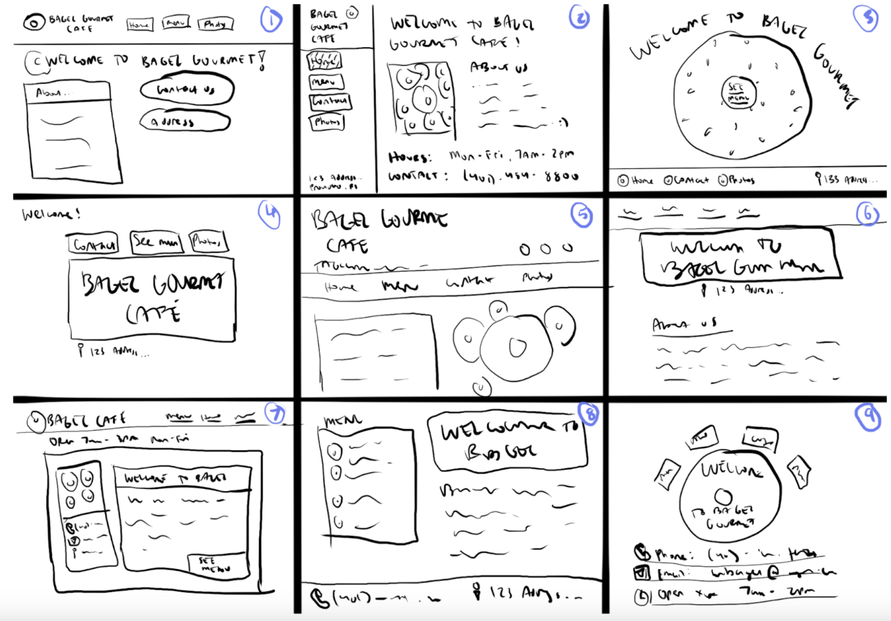
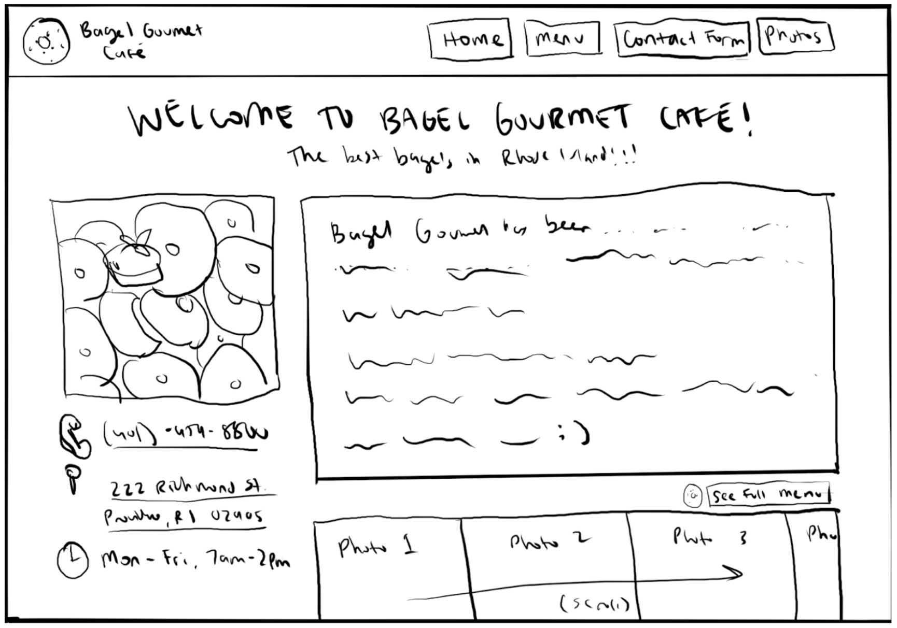
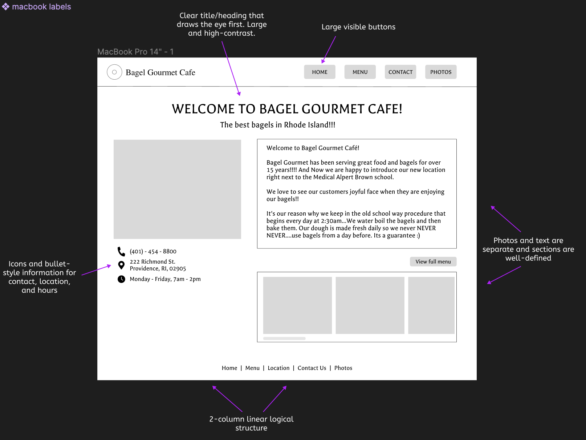
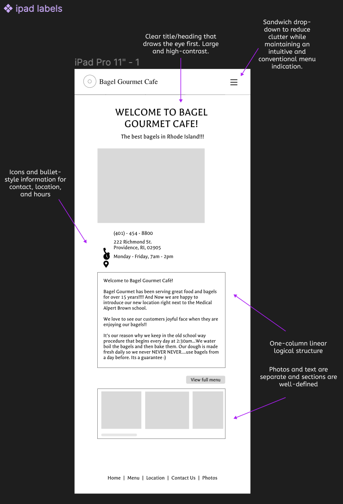
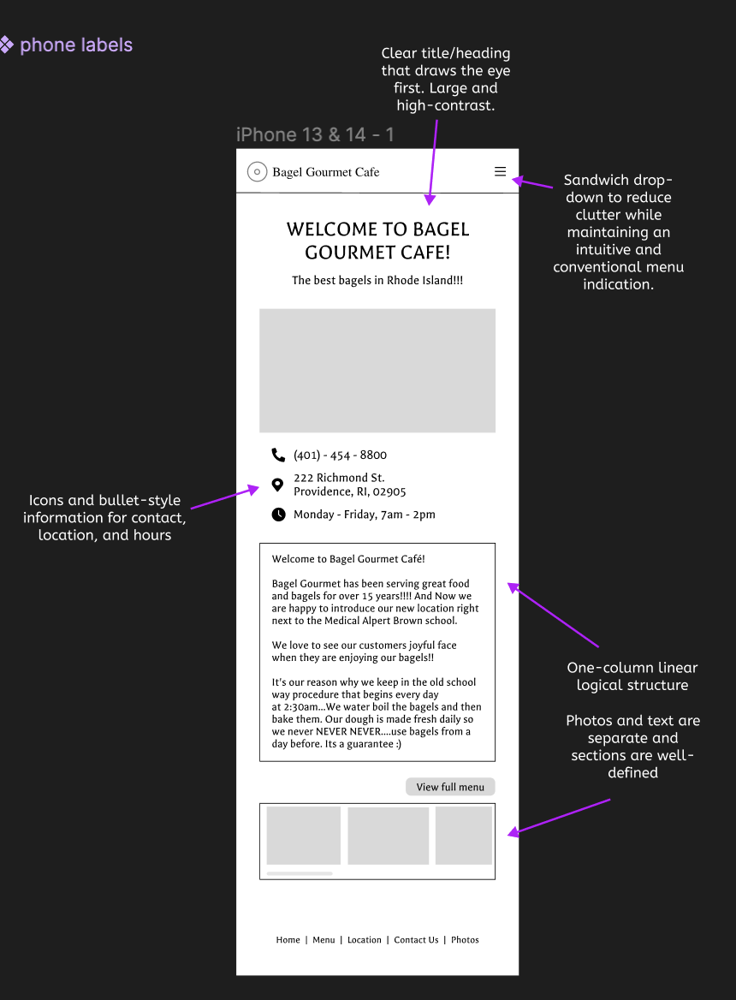
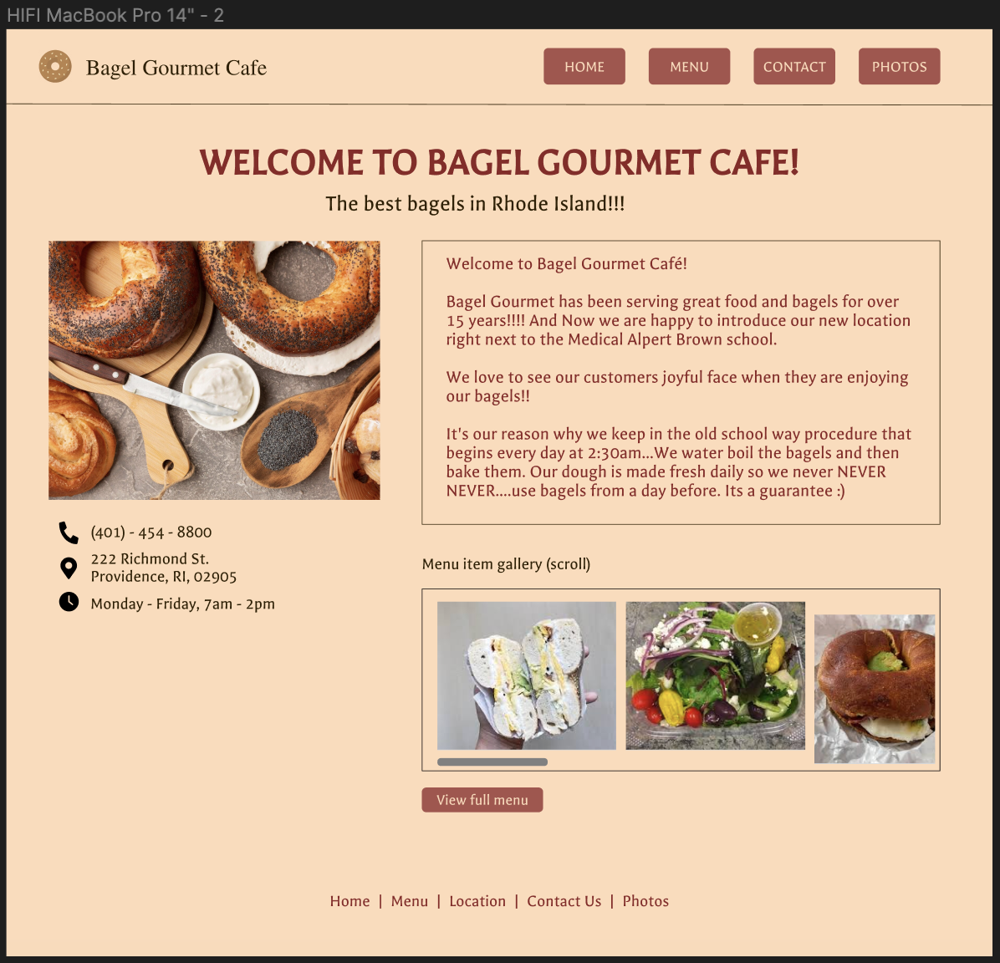
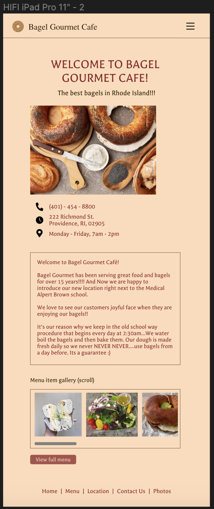
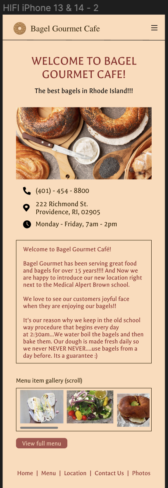

CS1300 Design & Full-Stack Project
Redesigning Providence's Bagel Gourmet Cafe Website
I analyzed and redesigned the Bagel Gourmet Cafe home page to improve on its responsiveness, usability, and accessibility, completing the design process cycle from brainstorm sketches up to a fully responsive HTML/CSS website. This project highlights design and full-stack skills.
Overview
Background & Objective
Bagel Gourmet's original website had a fun personality and welcoming message, but unfortunately had a few accessibility issues and additionally was not responsive to different screen sizes such as a mobile device. I thought it would be interesting to use as a case study to improve their consistency and presentation while preserving the original charm and fun characteristics.
Improvements
- I noticed a high number of text readability issues with contrast and small text.
- The page is difficult to navigate because of there being no clear page title or sections with headings.
- Images don’t have alternative text which can also be an accessibility issue even though the images don’t necessarily play a huge role in the page.
After analyzing potential accessibility issues through these various methods, I began to brainstorm improvements.
Design Iteration
Speed Sketching
For the first step of my visual redesign process, I used Procreate to create 9 speed sketches, setting aside approximately 1 minute per sketch.
Final Sketch
Afterwards, I analyzed the elements across my sketches to build a final sketch that incorporated the pieces of design that resonated with me most, which ended up being a top navigation bar and a two-column page format.
Polishing the Vision
Now that I had a base sketch, I went over to Figma to create wireframes for desktop, tablet, and mobile screen sizes.
Desktop:
Tablet:
Mobile:
Visual Design Style Guide
As I polished my wireframes and added in detail, I maintained a visual design style guide that displayed my reusable colors, typography, icons, and button states.
High-Fidelity Wireframes
Desktop:
Tablet:
Mobile:
Translating to HTML/CSS
The final step was to create the page using HTML and CSS, and a few lines of JavaScript or the opening/closing
of the hamburger menu on tablet/mobile screen sizes.
The site should be fully responsive on a phone (~375x667px),
a tablet (~768x1024px), a large computer (~3840x2160px), and any dimensions in between.
Additionally, in WebAIM it achieves 0 errors and 0 contrast errors. :)
You can checkout the redesigned Bagel Gourmet home page HERE.
Demo below, resizing in Chrome: